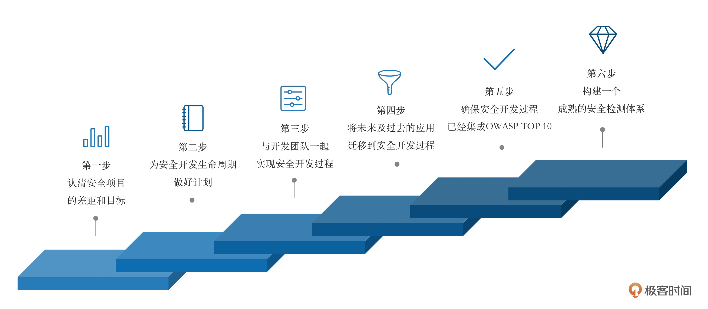

- 00 导读 解读OWASP Top10 2021.md.html
- 00 开篇词 从黑客的视角找漏洞，从安全的角度优雅coding.md.html
- 01 失效的访问控制：攻击者如何获取其他用户信息？.md.html
- 02 路径穿越：你的Web应用系统成了攻击者的资源管理器？.md.html
- 03 敏感数据泄露：攻击者如何获取用户账户？.md.html
- 04 权限不合理：攻击者进来就是root权限？.md.html
- 05 CSRF：为什么用户的操作他自己不承认？.md.html
- 06 加密失败：使用了加密算法也会被破解吗？.md.html
- 07 弱编码：程序之间的沟通语言安全吗？.md.html
- 08 数字证书：攻击者可以伪造证书吗？.md.html
- 09 密码算法问题：数学知识如何提高代码可靠性？.md.html
- 10 弱随机数生成器：攻击者如何预测随机数？.md.html
- 11 忘记加“盐”：加密结果强度不够吗？.md.html
- 12 注入（上）：SQL注入起手式.md.html
- 13 注入（下）：SQL注入技战法及相关安全实践.md.html
- 14 自动化注入神器（一）：sqlmap的设计思路解析.md.html
- 15 自动化注入神器（二）：sqlmap的设计架构解析.md.html
- 16 自动化注入神器（三）：sqlmap的核心实现拆解.md.html
- 17 自动化注入神器（四）：sqlmap的核心功能解析.md.html
- 19 失效的输入检测（上）：攻击者有哪些绕过方案？.md.html
- 20 失效的输入检测（下）：攻击者有哪些绕过方案？.md.html
- 21 XSS（上）：前端攻防的主战场.md.html
- 22 XSS（中）：跨站脚本攻击的危害性.md.html
- 23 XSS（下）：检测与防御方案解析.md.html
- 24 资源注入：攻击方式为什么会升级？.md.html
- 25 业务逻辑漏洞：好的开始是成功的一半.md.html
- 26 包含敏感信息的报错：将安全开发标准应用到项目中.md.html
- 27 用户账户安全：账户安全体系设计方案与实践.md.html
- 28 安全配置错误：安全问题不只是代码安全.md.html
- 29 Session与Cookie：账户体系的安全设计原理.md.html
- 30 HTTP Header安全标志：协议级别的安全支持.md.html
- 31 易受攻击和过时的组件：DevSecOps与依赖项安全检查.md.html
- 32 软件和数据完整性故障：SolarWinds事件的幕后⿊⼿.md.html
- 33 SSRF：穿越边界防护的利刃.md.html
- 34 Crawler VS Fuzzing：DAST与机器学习.md.html
- 35 自动化攻防：低代码驱动的渗透工具积累.md.html
- 36 智能攻防：构建个性化攻防平台.md.html
- 大咖助场 数字证书，困境与未来.md.html
- 春节策划（一） 视频课内容精选：Web渗透测试工具教学.md.html
- 春节策划（三） 一套测试题，看看对课程内容的掌握情况.md.html
- 春节策划（二） 给你推荐4本Web安全图书.md.html
- 结束语 无畏前行.md.html
- 捐赠
00 导读 解读OWASP Top10 2021
你好，我是王昊天。今天我们来聊一聊安全行业内“知名”清单的前世今生。
2021年，全新的OWASP TOP 10列表发布，相信只要是关注网络安全的同学，不管你是刚刚踏入安全行业不久，还是一名专业的渗透测试工程师，对于这个消息都不会感到陌生。它作为安全行业内的“知名”清单，不管是在系统开发，还是渗透测试中，一直都是Web安全领域的重点关注对象。
我们先来看下它的背景和定位，其重要性也就可见一斑了。
OWASP，致力于帮助企业和机构开发、购买和维护安全可信的应用和API。他是一个非营利性的公益组织，所有与之相关的产品，像是工具、文档、视频和PPT，都是免费开放给所有人的，如果你感兴趣也可以在课后去深入了解。
而 OWASP TOP 10 就是这个组织创立的一个认知型的文档清单，它帮助我们去了解，在目前的技术趋势下，Web业务系统中那些最常见、最高危的十类安全风险和漏洞。安全业内有许多人将OWASP TOP 10作为一种coding或测试的标准，但也因为它只包含了最具影响力的十类安全风险，所以在这些方面其实并不详实，但它依旧可以作为一个好的起点，帮助你走上Web安全的漫漫长路。
这节课我们就把重点聚焦在这份清单上，看看2021年的这份新清单，和2017发布的上一份清单相比，都有哪些安全风险发生了变化，以此进一步理解这些安全风险变化与技术发展之间的关系，并通过这种方式加深你对OWASP TOP 10的认知。
2021年的OWASP TOP 10清单有哪些变化？
我们先来看看这份最新发布的清单和上一份清单相比发生了哪些变化。这种变化从侧面反映了技术架构及安全趋势的演变，对于我们展望技术更新有很大帮助：

从上面这幅图中我们能看到，有些安全风险的排名有所下降：
- 曾经的安全风险之王“注入”已经从排位第一下滑到第三；
- 认证失败诱发的安全风险从第二下降到了第七。
这两类曾经风靡一时的安全风险排名都有了较大幅度地降低，其原因主要有两个方面。一方面，目前整个行业安全意识的提高，大大降低了线上运营中业务系统存在高危安全风险的可能性，这一点从行业服务趋势可以看出——大部分公司在Web业务系统上线之前都会经过详细的渗透测试，而这个流程在几年之前还没有这么普遍；另一方面就是第三方安全和认证组件的成熟，降低了认证失败的安全风险。
我们再来看看有哪些排名上升的安全风险：
- 敏感信息泄露以新的风险形式——加密失败出现上升到第二位；
- 失效的访问控制上升到第一位；
- 安全误配置从第六位微弱上升到第五位；
- 存在安全缺陷的以及过时的组件从第九位上升到第六位；
- 日志记录及监控不足从第十位上升到第九位。
这里值得我们展开探讨的是上升幅度较大的三类风险——加密失败、失效的访问控制以及存在安全缺陷的组件，这三类风险从一个侧面显示了目前Web安全开发及测试过程中需要重点关注的风险种类：
- 加密失败及失效的访问控制，这两类安全风险的共性都是非代码层技术性漏洞，无论是使用了不当的编码加密，还是业务逻辑分割不严密，都是传统安全领域扫描器难以发现的风险种类；
- 存在缺陷的安全组件则是在目前技术多元化趋势下，一个必然出现的安全风险种类。
最后再来看看那些新增的安全风险：
- 首先是不安全的设计。与上升的安全风险原因相似，随着自动化安全检测技术的提高，业务系统在设计中自身存在的问题开始更多地成为热点风险；
- 另外两种新进入TOP 10的风险分别是软件及数据完整性故障和服务端请求伪造。以软件完整性故障来说，它反映了目前一类成长非常迅速的新形态威胁——供应链污染，这种从上游组件开始污染，最终影响到终端客户的攻击，近些年取得了很大程度的发展。
这10项安全风险，分别是什么？
接下来我们展开谈一谈十大安全风险，方便你对其中的每一项安全风险有个宏观的认知。而对于每项安全风险更加具体地介绍，如出现的原因、应用的场景以及相应的编码防护手段，我会在后续课程中详细展开。
A01：2021-失效的访问控制
访问控制存在的意义主要是设定了一种边界，使得用户并不能获得在边界之外进行操作的权限。当访问控制失效，通常会导致非授权信息的泄露、越权修改及破坏数据、执行权限外的操作等后果。
A02：2021-加密失败
这项风险在2017年的清单中以“敏感信息泄露”的形式存在，它更多的是一种常见的风险信号，而不是直接导致安全事件发生的根源。因此我们更多的关注点应该放在密码学的失败调用这些方面。在实际的工作场景下，这类失败的调用往往会伴随着数据泄露事件一起发生，而这种结果的出现是谁都不愿看到的。
A03：2021-注入
这项风险在2017年的清单中高居榜首，通常注入问题都以SQL、NoSQLayer、命令注入等形式存在。注入在几年前确实极具威慑性，然而，随着自动化检测技术的发展，企业和机构往往在开发过程中就引入一系列安全工具来增强安全属性，比如在CI/CD中引入SAST以及DAST工具，这就大大降低了出现这类风险的概率，这也是这两年大热的DevSecOps的理念。
A04：2021-不安全的设计
这是2021年新引入的一项安全风险，主要关注设计和业务流程上的风险。事实上，不安全的设计是一个比较宽泛的话题，可能存在于很多风险之中。这里我们指的是在产品设计过程中，通过安全规范的设计以及威胁建模等流程，那些能被我们检测和规避的安全威胁种类。
A05：2021-安全误配置
与2017年清单相比，可以看到这项安全风险的排位有了些许的提升，也许你会觉得从第六名上升到第五名变化不大，但是就像我刚刚讲的——“一叶知秋”，有时候这种微小的变化却体现了宏观的技术发展趋势。随着技术架构向高度“可配置化”软件的迁移，这种风险类别的排位上升倒是并不令人惊讶。
A06：2021-易受攻击和过时的组件
随着技术的蓬勃发展，大部分产品都会不同程度的依赖各种第三方组件；随着系统复杂度的提升和规模的扩大，也会出现组件更新不及时的情况。这些风险可能涉及的资产包括OS、Web中间件、DBMS、API、库等，从这个角度你就可以发现随着企业规模的扩大，在攻击者眼中的攻击点有多么广泛。
A07：2021-识别和认证失败
确认用户的身份、认证过程以及Session管理是预防认证相关风险的关键点，简单来说，这一风险类别可能面临的攻击包括暴力破解、密码喷洒、弱口令、Session管理不当等诸多问题。后续我会详细和你展开讲一讲其中的奥秘，所以现在不要急，我们先将剩余的几个风险看完。
A08：2021-软件和数据完整性故障
作为新出现的一类安全威胁，这一分类主要关注于软件更新、关键数据以及“CI/CD”流水线的完整性校验。用比较直白的语言来说，现在大多数应用都不同程度依赖于外部的插件、库、模块以及第三方源，所有这些外部风险都可以通过一次不安全的“CI/CD”流水线直接引入到应用中；更进一步，应用的自动更新策略已经广泛普及，但是关于更新内容的完整性检测却没有跟上，这就导致软件更新可能直接引入安全风险。
A09：2021-安全日志记录及监控失败
这一分类主要目的是提供更多信息，并且帮助我们去发现、评估及响应出现的入侵事件。为了达到这个目的，完善的安全日志记录以及持续的监控服务就显得尤为重要。虽然说起来简单，但是如何记录不同的事件及API活动记录、管理日志文件该如何存储和维护，这些都是需要我们考虑的问题。
A10：2021-服务端请求伪造
现代Web应用普遍为终端用户提供了更多便捷的功能，这其中就包括获取一个目标的URL资源的功能，也正因为如此，SSRF成为了一种快速攀升的威胁种类。一旦这类风险发生，尽管这些内网系统可能被保护在防火墙或者VPN之后，却很有可能会威胁到Web业务系统后端的内网系统。
如何将OWASP TOP 10应用到一个安全项目中？
既然你已经了解了OWASP TOP 10，那么我们就要看一看如何将OWASP TOP 10应用到一个安全项目中。虽然OWASP TOP 10的设计初衷并非一个安全项目的检查清单，但是这并不妨碍它成为一个好的安全基线。

第一步，认清安全项目的差距和目标。
在启动一个安全项目前，第一步是评估当前我们所处的位置，准确地识别在管理、设计、实现、验证这些过程中，哪些是立即需要去解决的问题而非可以等待的问题。
具有丰富经验的CSO们都有一个深刻的认知，即安全建设是个无底洞，攻防一直是道高一尺魔高一丈的循环。因此在企业发展过程中，如何准确地评估当前安全事务的优先级，并且利用有效资源进行针对性的防御，才是衡量安全技术水平的试剑石。
第二步，为安全开发生命周期做好计划。
“安全开发生命周期”被业内认为是最简单也是最有效的安全方案，这种措施可以在安全团队与开发团队之间构建紧密的合作关系，当然如果本身就是同一个团队的话就更好了。这项计划目的是可以持续地提高、检测、以及替换不安全的组件。虽然这项计划在构建之初看起来需要大量的投入，但它却可以使我们在实际操作中快速启动一个原型，然后随着开发节奏的推进不断集成新的安全工具。
从经验角度来说，在产品或者项目落地之初就引入安全建设方案，往往是最佳选择。正所谓“好的开始是成功的一半”，这样的操作一方面可以培养开发团队的良好编码习惯，另一方面可以在不断迭代中强化安全能力，不会在某一个阶段突然出现大笔的安全开销。
第三步，与开发团队一起实现安全开发过程。
为了保证安全开发过程的顺利进行，我们需要在开发前期获得开发团队的认可，过程中确保他们持续性的参与，开发过程之后让他们更安全快速地交付更多应用。目前我们所期待的安全开发过程应该是覆盖整个企业以及应用安全生态的，而非像过去一样采用单点或者单应用模式。
这里要注意应该将安全能力融入到开发过程当中，而非作为单一测试过程独立存在。
第四步，将过去和未来的应用迁移到当前的安全开发过程中。
当新的安全检测能力集成到安全开发过程后，我们应该通过持续集成（CI）来检测历史代码中是否存在不安全的使用，并通过警告或者拒绝构建的方式来督促改进。通过这样的方式，不仅可以有效防止安全隐患悄悄潜入应用中，也可以减轻未来的安全成本。
从最佳实践角度来说，我们一般还应该为警告或者拒绝构建的原因增加一项链接，使得直接开发人员可以快速找到安全合理的解决方案。
第五步，确保安全开发过程已经集成了OWASP TOP 10。
讲了这么多，终于到最重要的部分了——在实现安全开发过程中，我们究竟需要集成和使用哪些安全能力呢？这里我们要从最重点的安全问题着手，而OWASP TOP 10就给我们了一个很好的参考，比如我们可以：
- 自动检测以及修复有安全隐患的组件；
- 自动检测代码是否存在注入隐患或者推荐一个更加安全高效的lib来预防注入问题的发生…
随着更多安全组件的引入，我们将可以更加高效且安全地开发应用，而安全团队的一项重要的任务就是保证这些安全组件的持续更新和有效性。
第六步，构建一个成熟的安全检测体系。
虽然OWASP TOP 10是非常重要的，但想要构建一个成熟的安全检测体系可不能仅仅止步于此。安全的有效性往往取决于安全建设的最短板，因此，我们需要不断去覆盖更多的安全风险点。我们要做的，首先是从OWASP TOP 10入手，将主流安全风险降到最低，然后开枝散叶引入更丰富的安全体系（包括OWASP TOP 10不包含的安全风险，以及更丰富的自动化检测手段，如DAST等），这样才能构建成熟的安全检测框架。
总结
这节课我带你学习了2021新发布的OWASP TOP 10清单。你首先了解了这份清单的背景与定位：它在安全领域举足轻重，是安全领域的“风向标”。
接着将它与2017年的版本做了对比，找出了那些下降的、上升的和新增的风险，通过对比我们了解到安全风险随着新技术的发展不断变化，由此分析出加密失败、失效的访问控制和存在安全缺陷的组件是我们需要重点关注的安全风险；随后明确了新清单所包含的内容，即对10项风险的大致介绍，我将它们总结成一张图片放在文章结尾，提供给你参考。
最后，我们通过具体的步骤将知识点回归到实际的工作当中，学习了该如何通过六个步骤将OWASP TOP 10应用到一个安全项目中：首先我们要找好定位，排好优先级，制定好安全开发的生命周期，其次要和开发团队打好配合，将未来和过去的应用迁移过来，在对OWASP TOP 10这些主要的安全问题作出排查之后，最后就是要增补细枝末节的安全问题，逐步完善安全检测体系。
在以后的学习、工作和交流中，相信对于OWASP TOP 10清单的深刻理解可以给你提供更多的帮助。尤其要注意的是，无论学习了多少深层知识，如何将知识简化并且让知识在工作中产生价值才是最重要的。因此我们也探讨了如何以OWASP TOP 10为起点开始安全开发过程。当然，这些内容我希望都是抛砖引玉，目的是激发你更多思考和学习热情，帮助你成为一名优雅的开发工程师或者专业的黑客高手。

思考题
Q：这节课我们一直在探讨TOP 10，那么你能否找到一些未被列入TOP 10的安全风险种类呢？
期待你的思考，也欢迎你在留言中与我交流，或者转发给你的朋友加入讨论。我们下节课再见！
© 2019 - 2023 Liangliang Lee. Powered by gin and hexo-theme-book.